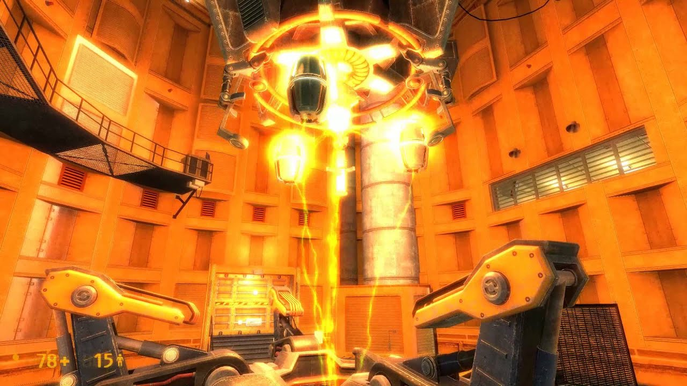
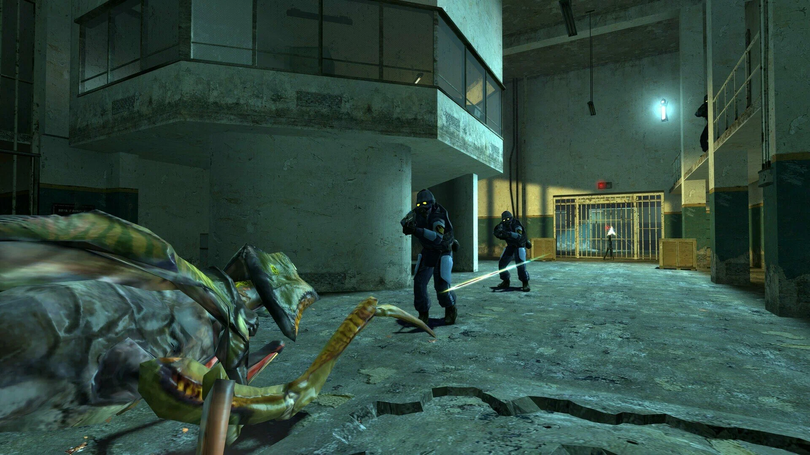
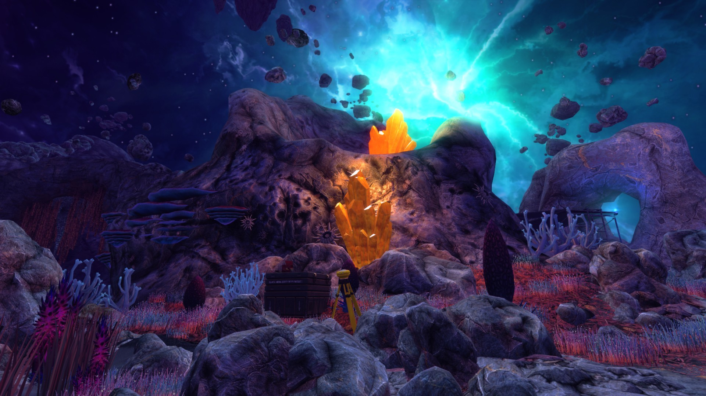
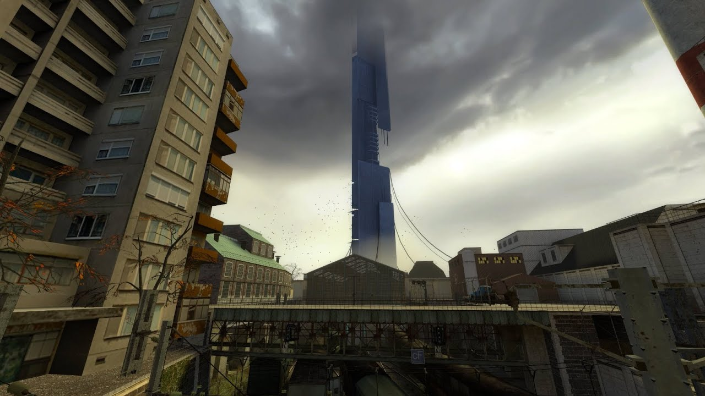
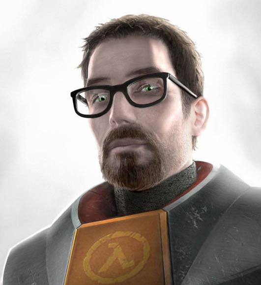
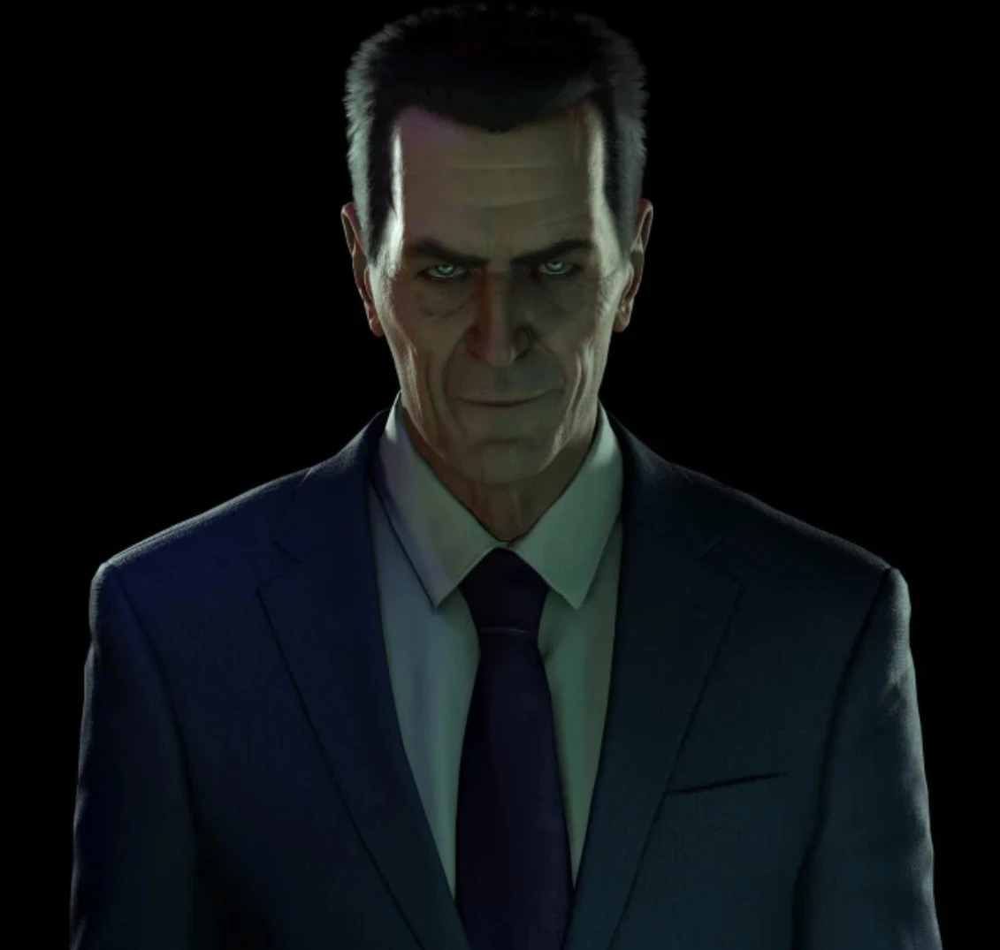
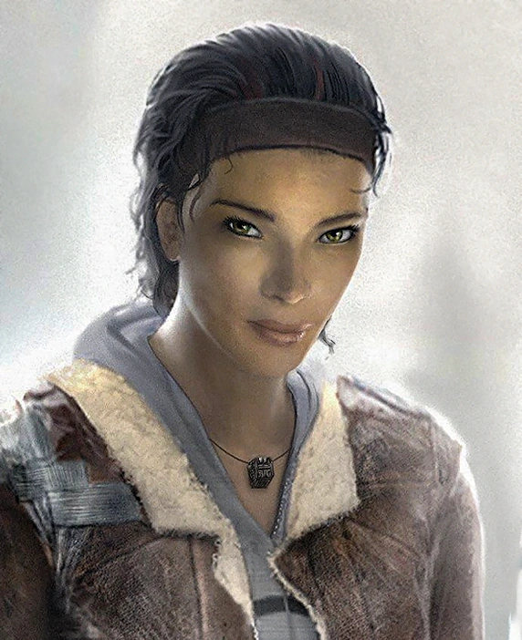

Half-Life představuje jednu z nejvlivnějších FPS sérií historie. Valve zde spojilo realistické prostředí, napětí a revoluční způsob vyprávění příběhu.
Příběh Half-Life začíná ve výzkumném zařízení Black Mesa, kde fyzik Gordon Freeman provádí experiment s mimozemským materiálem.
Experiment se však vymkne kontrole a otevře portály do světa Xen. Komplex zaplaví mimozemské formy života a později dorazí i vojenské jednotky HECU.
Hráč tak musí přežít katastrofu, uniknout z laboratoří a odhalit pravdu.

Xen je mimozemský svět propojený s Black Mesou. Je tvořen plovoucími ostrovy, podivnou biologií a nebezpečnými organismy.
Právě zde Gordon čelí největším hrozbám, včetně Nihilantha, který ovládá invazi mimozemšťanů.
Originální hra, která redefinovala FPS žánr.
Rozšíření sledující pohled vojáka Adriana Shepharda.
Valve představilo Source engine a fyzikální revoluci pomocí Gravity Gun.
Pokračování příběhu Gordona a Alyx Vance v boji proti Combine.




Vědec z Black Mesa a hlavní protagonista série. Je známý HEV oblekem a ikonickým crowbarem.

Záhadná postava, která sleduje Gordona během celé série. Jeho skutečný původ zůstává neznámý.

Spojenkyně Gordona ve Half-Life 2. Patří mezi nejlépe napsané ženské postavy videoher.